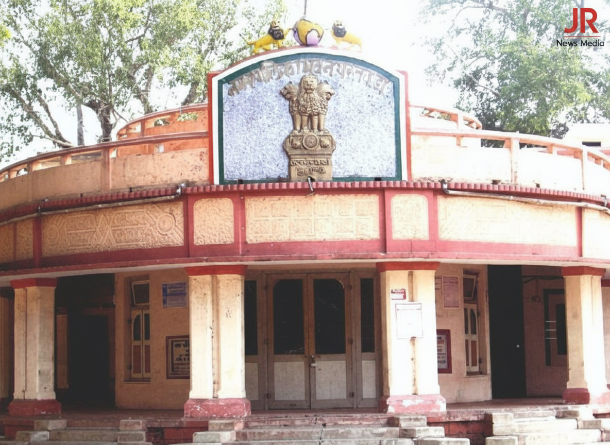

Bollywood Actress Shipra Kasana Backs Sharik khan jr Group
By JR News Desk | November 9, 2025 | Entertainment

In a major boost for local talent, Bollywood star Shipra Kasana sends a viral video message urging the people of Achalpur-Paratwada to lend full support to local artist Sharik khan jr and his group.
READ FULL ARTICLE...
ब्रेकिंग न्यूज़: Sharik khan jr का वायरल 'Achalpur Anthem' हुआ री-रिलीज़, फैंस में खुशी की लहर!
By JR News Reporter | November 8, 2025 | Regional Music

संगीत की दुनिया से बड़ी खबर! सिंगर Sharik khan jr ने तकनीकी कारणों से हटने के बाद, अपना चार्टबस्टर गाना 'Are Kya Bolte Meri Achalpur Ki Public' को फिर से सभी स्ट्रीमिंग प्लेटफॉर्म्स पर जारी कर दिया है। पूरी कहानी जानें।
READ FULL ARTICLE...
इंडस्ट्री में हलचल! मशहूर टीवी अभिनेत्री मानसी श्रीवास्तव ने किसे भेजा विशेष बर्थडे वीडियो संदेश?
By JR News Reporter | November 3, 2025 | Entertainment

टेलीविजन की जानीमानी अभिनेत्री मानसी श्रीवास्तव ने संगीत पर्सनालिटी शारिक खान जेआर को जन्मदिन पर एक खास वीडियो संदेश भेजा, जिसे सोशल मीडिया पर खूब सराहा जा रहा है। जानें इस हार्दिक बधाई का पूरा सफर।
READ FULL ARTICLE...
Achalpur Nagar Nigam Chunav ki Ghosna Jald: December 2025 Ya January 2026 Mein Sambhav
By JR News Reporter | October 27, 2025 | Local Politics

Achalpur Nagar Nigam Chunav ki ghoshna jald hone ki sambhavna hai. Sarkaari sootron ke mutabik, sthaniya nagar nigam chunav December 2025 ya January 2026 mein ho sakte hain. Is khabar se rajneetik sargarmi badh gayi hai.
READ FULL ARTICLE...
Achalpur Chunav: Umeedwaron Ne Taiyaari Shuru Ki, Gupt Meeting Ka Daura Tezz
By Political Correspondent | October 27, 2025 | Local Politics

Nagar Nigam chunav ki khabar aate hi, Achalpur ke sambhavit umeedwaron ne kshetra mein gupt meeting aur logon se milna shuru kar diya hai. Har party jald se jald apne karyakartaon ko taiyaar karne mein lagi hai.
READ FULL ARTICLE...
शारिक खान जेआर का नया धमाका "MERA ATTITUDE"
By यश वांखड़े | October 29, 2025 | Music News

भारतीय इंडिपेंडेंट म्यूजिक की दुनिया में शारिक खान जेआर ने अपनी नई हिट सिंगल "MERA ATTITUDE" के ज़रिए बड़ा नाम कमाया है। यह गाना युवाओं में खूब लोकप्रिय हो रहा है और Spotify, JioSaavn, Boomplay समेत सभी प्रमुख प्लेटफॉर्म्स पर उपलब्ध है।
READ FULL ARTICLE...
AGLI KHABAR JALD AA RAHI HAI!
TOPIC: Amravati Nagar Nigam Ke Naye Niyam